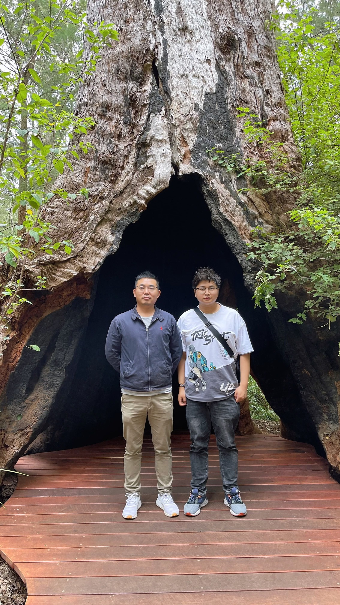
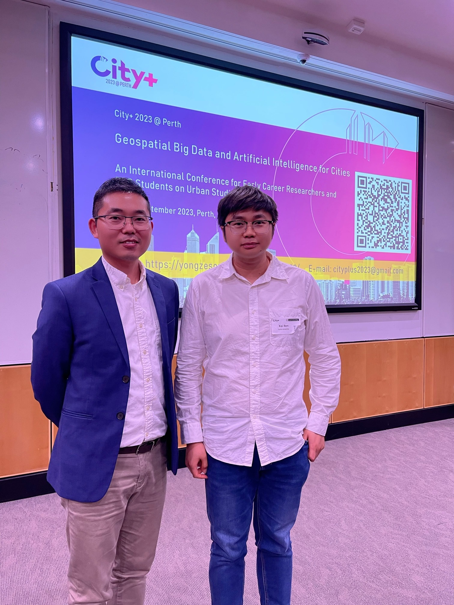
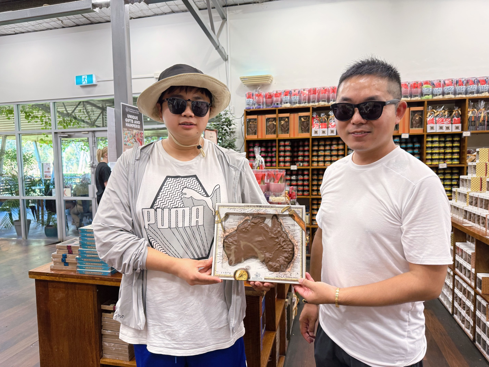
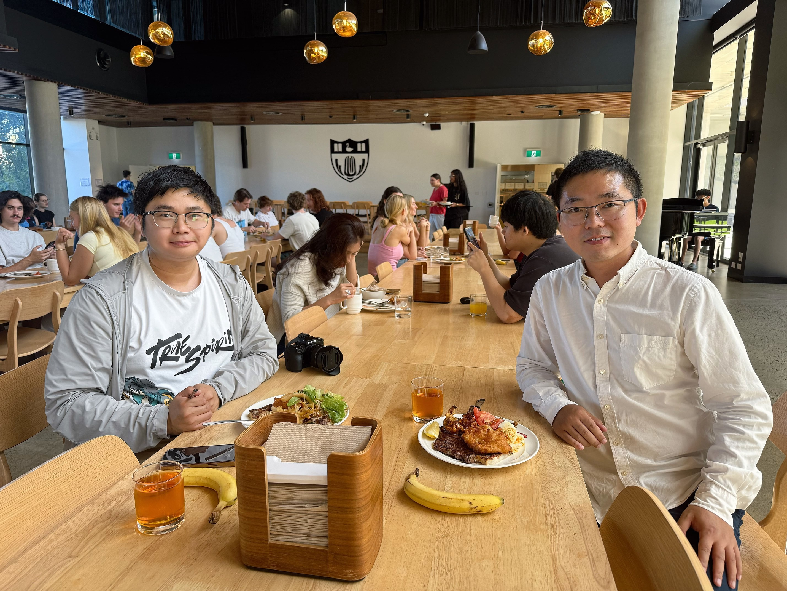
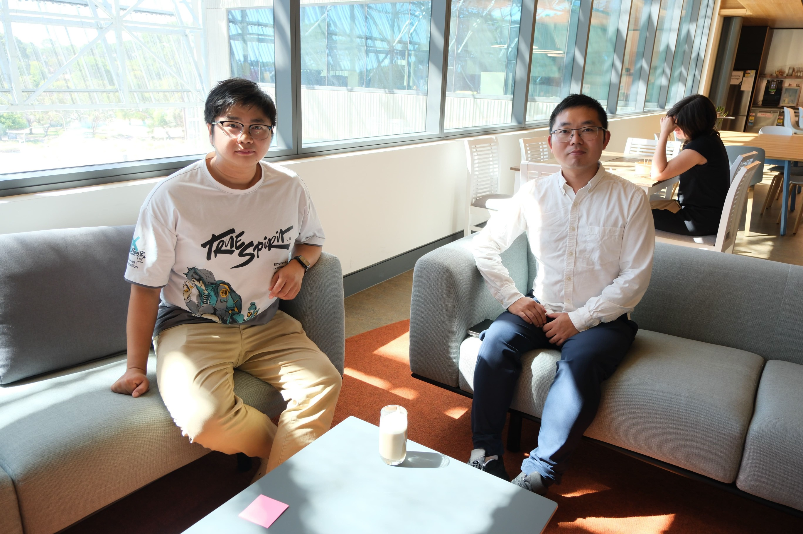
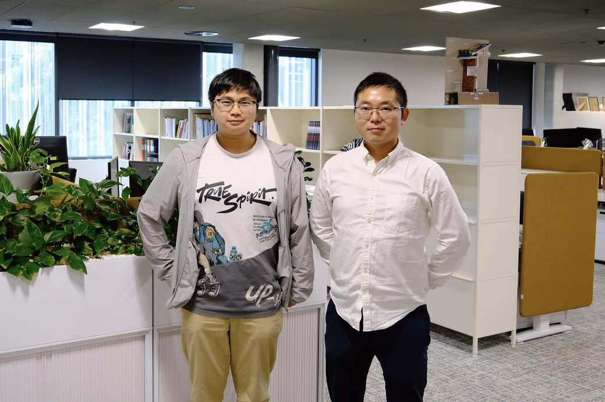
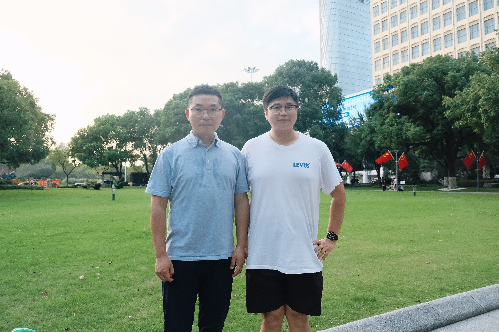
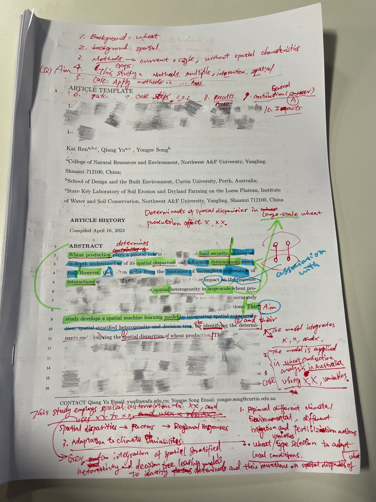
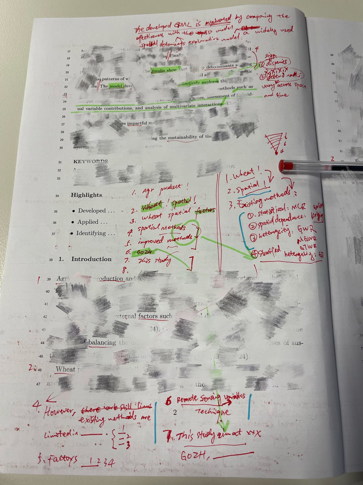

Academic Mentorship
My PhD Supervisor in Australia: Associate Professor Yongze Song
A short note on A/Prof Yongze Song at Curtin University and his guidance as my PhD supervisor in Australia.

机缘巧合之下，经师兄介绍认识了宋泳泽老师。从此开启了一段奇妙的 GIS 之旅。可幸的是我在宋老师的带领重回最爱的 GIS 赛道！
那时的我还是一个学术小白，没有项目，没有论文，刚刚拿到 CSC 联培奖学金，又被中美关系导致的签证问题抛弃。无奈只能另选国家。
记得 2022 年一个秋天的晚上，我和宋老师刚刚加上好友。宋老师还没怎么了解我有多菜，就直接发给我一份邀请函，协助我办入学手续，邀懂得人协助我办理签证。
那时的我还是懵懵懂懂，非常向往国外的新奇生活。
宋老师在我还没去澳洲的时间里，隔一段时间就会微信视频了解一下我的情况：“你最近在忙什么呀？有没有什么论文？我这里有一个期刊需要论文，有没有投稿计划？”我倍感受宠若惊。
去澳洲的过程历经波折，从递签，等签，撤签，准备改派去日本，最后好运下签。接着顺利到了澳洲。一大早 5 点多的飞机到澳洲，独自一个人拖着三个行李箱，宋老师亲自开车去机场接我（之后所有来珀斯的学生老师们，宋老师都是亲自到机场去接送，超感动）。
对于初到澳洲的我，宋老师帮我安排住宿，带我去超市采购生活用品，日常生活里带我们出去玩，聚餐，喝咖啡。我也从一开始对老师的疏离，变得慢慢亲近起来。
记得我初到澳洲的时候，因为性格内向不咋爱说话，都是宋老师问一句我答一句。清楚的记得有一次他问我，“你一直都是这么不爱说话吗？”，谁成想过了很久之后的我，让宋老师又神秘的笑着说，“凯哥你咋这么活泼”。
来到 Curtin 之后我才知道，我算是他唯一的学生（之前的一个学生已经毕业了），之后我见证了宋老师领导的 Geospatial Intelligence Lab 一步一步壮大，成员逐渐扩大到全球范围。
关于科研，宋老师在我安顿好之后，就抽出了一整个晚上，为我规划这两年要写的文章，甚至帮我规划好了博士毕业论文的内容。虽然当时规划的文章我只完成了一半，但对于 0 基础的我来说，已经是非常大的成功了。
宋老师与我国内的导师于强研究员相似。相同的是人都超级好，超级友善，懂得特别多，总是能将复杂的问题拆解简单化，同时努力给团队的老师和学生创造各种磨练的机会。
我的学术之路得益于宋老师，他从最基础的如何找点子，如何读文献，如何写代码，如何画图，如何改文章，如何回复审稿人意见，事无巨细的通通手把手教我。对于目前的我来说，我觉得最使我受益匪浅的是两个工具：
一是 Latex，以前只会傻乎乎的用 word 调格式到崩溃的我，自从用了 Latex，才知道原来论文的写作并不难，自己只需要管整个文章的文字就行，其余的图片、表格、公式、上下标、参考文献等复杂的问题可以全部交给 Latex 自动排版，真正的代码化写作，只需要一个 Visual Code 就可以写一篇格式完美的论文；
二是 Adobe Illustrator，以前总是称呼它为 AI，现在不得不叫原名了，宋老师之前手把手教我如何使用 AI 来绘图，教我如何改图，如何优化美化图，从此终于摆脱了 low 爆了的 ppt 绘图和 Visio 绘图。
宋老师也会经常组织各种大型的国际会议，带上我们学生和老师们去 social，认识工业界和学术界的大佬和前辈。我作为组委会成员或者工作人员，参与了 City+2023@Perth，IPC2024，ISPRS TC IV Symposium 2024，IPC2025 等大型的国际会议。
我在澳洲的时候总是无可救药的爱玩，因为我知道我在国外的时间很短暂，我想把握在这里的每一刻，完全把论文抛到了脑后，宋老师总是看我无可奈何的笑笑，“凯哥又去哪玩了？”。
直到我两年访学结束，我还没一篇论文发出来。我自知愧疚，也心生急切。
好在，一切都在往好的方向发展！Be strong...

Soon after arriving in Australia, we visited Albany at the southern tip of Western Australia during Easter (11 April 2023).

Organising the City+2023@Perth international conference together (8 September 2023).

At the chocolate factory in Perth's Swan Valley (2 March 2025).

A buffet lunch on campus with Yongze before I left Australia (28 March 2025).

A photo together in the lounge area of Building 418 (29 March 2025).

A photo together in the office area of Building 418 (29 March 2025).

Meeting again in Nanjing after returning to China (1 October 2025).
文末附上宋老师认真帮我改第一篇文章的图片，密密麻麻的注脚：

Yongze's exceptionally careful and detailed comments on my paper (1).

Yongze's exceptionally careful and detailed comments on my paper (2).